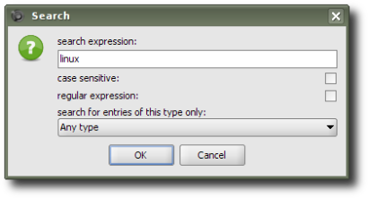
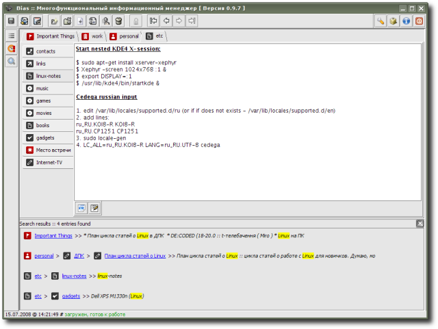

SimpleSearch - инструмент для поиска; разрешает искать вхождения заданного текстового блока (с опциональной чувствительностью к регистру) либо использовать для поиска регулярные выражения (есть также проверка синтаксиса оных); кроме того, можно искать не по всем, а лишь по конкретному типу записи (соответствующему расширению записи); результаты выдаются в виде “путей” к найденным записям, при этом отображаются как заголовки найденных записей, так и их иконки, при клике на которых осуществляется переход на соответствующую запись; для пущего удобства совпадения подсвечиваются.
Инструмент предоставлен Р. Касьяненко, автором приложения Bias.
Предварительный просмотр:

